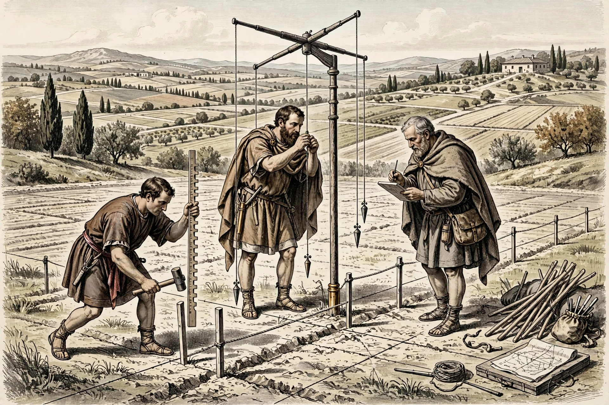

Agrarian laws (Latin: leges agrariae) were laws in ancient Rome regulating the distribution of public land (ager publicus) — land acquired by conquest and owned by the state — among citizens. Because the rich tended to occupy public land in vast slave-worked estates (latifundia) while dispossessed small farmers drifted to the city or filled the legions, proposals to redistribute land became one of the most contentious and recurring issues of Roman politics, culminating in the reform programme of the Gracchi brothers, whose violent deaths in 133 and 121 BC are often taken to mark the beginning of the fall of the Roman Republic.
| Agrarian law | |
|---|---|
 Roman land surveyors dividing conquered land into allotments. | |
| Subject | Distribution of ager publicus (public land) |
| Key laws | Lex Cassia (486 BC); Licinian-Sextian laws (367 BC); Lex Sempronia agraria (133 BC) |
| Key proponents | Spurius Cassius; Tiberius and Gaius Gracchus; Julius Caesar |
According to tradition, the consul Spurius Cassius proposed the first agrarian law in 486 BC, to divide conquered Hernician land among the plebeians and Latin allies; the Senate blocked it and Cassius was executed for allegedly aiming at tyranny. The Licinian-Sextian laws of 367 BC reportedly limited holdings of public land to 500 iugera (about 125 hectares), though the provision was often evaded. Through the middle Republic, land distribution more often occurred through the founding of colonies and individual assignments (viritim) in conquered territory.
The crisis came to a head in 133 BC, when the tribune Tiberius Gracchus, arguing that the disappearance of the free peasantry threatened the legions' supply of recruits, carried the lex Sempronia agraria: enforcement of the 500-iugera limit, with surplus public land distributed in small inalienable plots to poor citizens by a three-man commission. The Senate's fury at his methods — deposing a fellow tribune and seeking re-election — led to a riot in which Tiberius and some 300 supporters were clubbed to death, the first political bloodshed in Rome in centuries. His brother Gaius Gracchus revived and extended the programme a decade later (grain subsidies, colonies, jury reform) before himself dying in the violence of 121 BC under the Senate's first "final decree" (senatus consultum ultimum). The land commission's work was then gradually undone by laws permitting the sale of allotments and privatising public land.
Agrarian proposals remained a staple of popularis politics: Saturninus in 103–100 BC, the failed bill of Rullus opposed by Cicero in 63 BC, and Julius Caesar's lex Julia agraria of 59 BC, which distributed Campanian land to Pompey's veterans and the urban poor. Under the triumvirs and emperors, land grants to veterans were a routine instrument of power. In modern usage "agrarian law" and "agrarian reform" have broadened to mean land reform generally — the redistribution of agricultural land by the state, as in post-revolutionary Mexico, Japan after 1945, and many decolonising states.